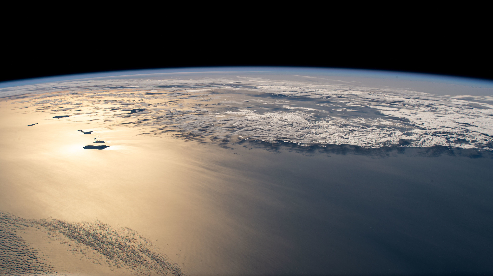
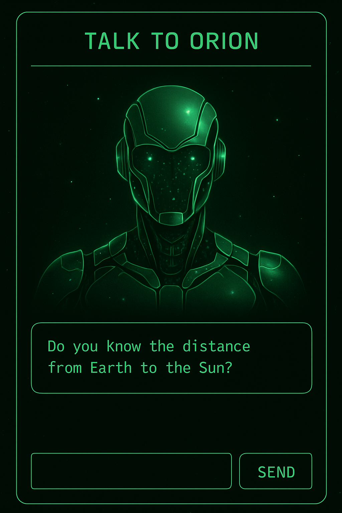

Astro Home
Equipment
Photo Gallery
Observation Log
Sky Calendar
Tools
Nebulounge
Welcome to the Nebulounge
Escape. Reflect. Stargaze.

Observatory
Talk to Orion
What’s Up Tonight
Next Destination

TALK TO ORION
✖
Orion: "What do you seek, stargazer?"
SEND